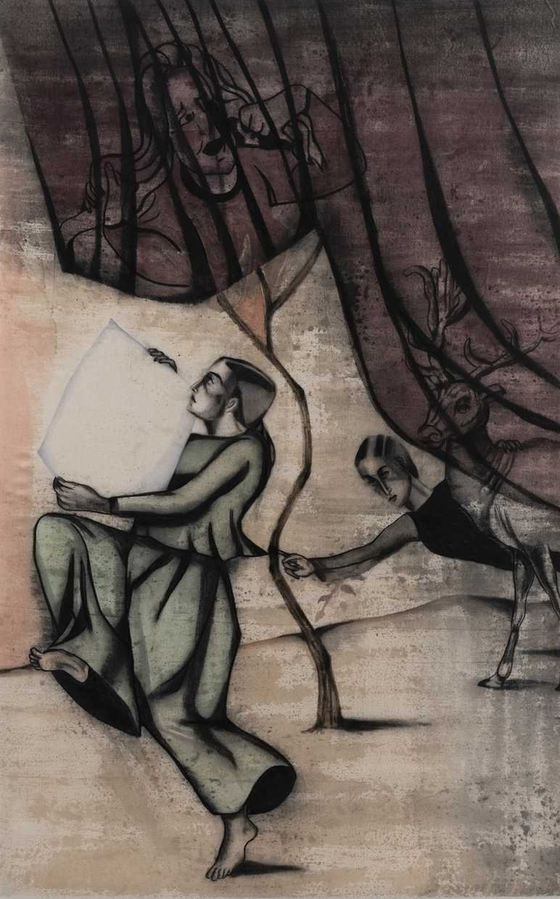

Image Credit - Chemould Prescott Road
Anju Dodiya is a renowned artist from Mumbai who is known for her sensitive "fictional self-portraits" that address the terrifying act of creation. Dodiya received her degree in painting from the Sir JJ School of Art in 1986, and since the 1990s, she has been acknowledged as one of her generation's most well-known painters. She challenges the capabilities of watercolour on difficult surfaces in terms of scale and texture as a committed watercolourist. Her paintings usually contrast hard-edged charcoal incursions with soft, spontaneous watercolour blotches and stains. Her artworks frequently address sociology, economy, culture, and current events in a subtly critical manner. With complex symbolism, the details in her paintings depict how reality appears on the surface.
Dodiya has developed her visual language and scale throughout the years, layering references from literature, European cinemas, Japanese Ukio-e prints, Renaissance artists, miniature paintings, and, more recently, Instagram. She has also been influenced by myths from all across the world as well as medieval devotional poetry and Gujarati folklore. Cultural scholar Nancy Adajania has said that when viewing her self-reflective pieces, viewers "encounter a palimpsest of art history, cinema, haute couture, and private joke." In Dodiya's paintings, mythical women like Daphne, Penelope, and Arachne have featured as protagonists, expressing ideas of vulnerability or participating in the rhythm of labour. In her paintings, women are frequently at the heart of autobiographical and interpersonal relationships. Her propensity for anthropomorphic imagery has persisted in her works, reflecting her ongoing interest in psychoanalysis and the human psyche.
She is featured in a number of private and public collections, including those at the Art Institute of Chicago and the Zabludowicz Collection in Florida, the National Gallery of Modern Art in New Delhi and Mumbai, the Jehangir Nicholson Art Foundation in Mumbai, the Ishara Art Foundation and the Prabhakar Collection in Dubai, the Kiran Nadar Museum of Art in New Delhi, the Devi Art Foundation in Gurgaon, and many more.